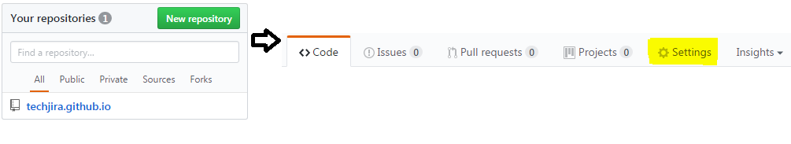
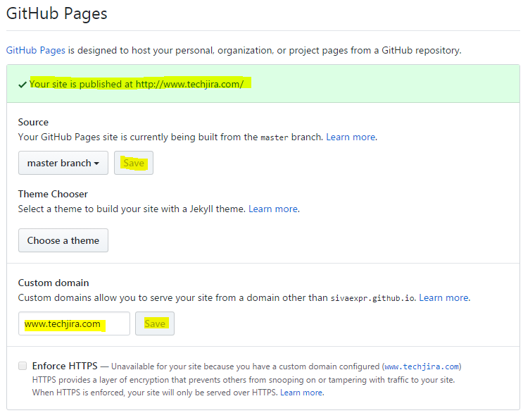
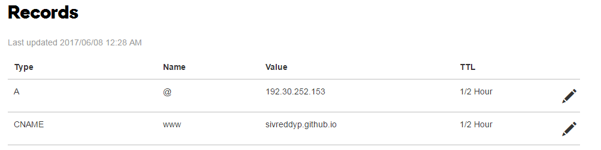
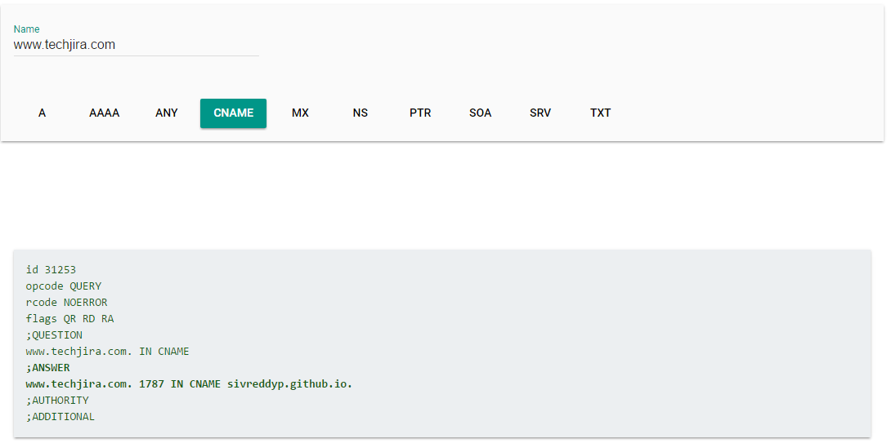

Introduction
This article intended to explain how to use Github page as a static web hosting server. Usually, if you want to have a website, you need to buy a domain and then buy storage space to keep the static files. There are lots of internet domain providers in the market. I did my domain registration through Godaddy. You can choose the domain providers as you like.
Once you register the domain you need web pages to reach your contents. These contents could be a plain text, images, music files, videos and etc. Like domain name providers, there are lot of hosting providers in the market. The majority of the domain providers will provide hosting as well, but you need to pay money for that.
If you are planning to have a standard or static contents of your web pages and don’t need any special software (called static web hosting) there are lot providers who gives web hosting for cheaper price. For example, Amazon S3static web hosting. Now, we don't need to spend money for this. Yes, we can have a web hosting in Github without paying a single penny. This is very useful for the people who want to have a web site with static web pages like having company profile, business brochure, blog or personal profile. Use below steps to create a page in Github and map to your domain.
Create Github page
The first step to host the web page in github is creating a page. Follow steps mentioned in github page to create a page. Don’t forget to create your repo with .github.io suffix. For example, if you want to create a repository something, liketechsams then use name as techsams.github.io. if you don’t give this suffix, it will still work, but the default page will be rendered from README.md file. If you give a suffix, it will pick index.html as a default page.
Github configuration
There is a good documentation available in github with the instructions to use a custom URL with Github pages, but you need to go through multiple links to achieve this. Use below steps to add your domain into github.
- Login into Github. Select your page repository from Your repositories list and click on Settings 
- Scroll down until you see Github pages. If you already not yet enabled the page, select the branch to keep your web pages and click on the Save button.
- Once you have enabled the page option, give the domain name and click on the Save button. You will see a success message with your website name. The moment you save domain, Githubwill add a file called a CNAME in your repository. 
Once you are done with Github configuration go to DNS configuration.
DNS configuration
To configure your domain with Github, you should know how to add DNS records with the DNS provider. If you don’t know how to do it, contact your domain provider. Most of the domain providers will have a web page to manage your DNS records online. Here, I am using godaddy DNS page to give the explanation. There are two different types of domains i.e., sub domain and apex domain. Sub domain usually comes with www. For example www.techjira.com is a sub domain. Apex domain doesn’t have www. For examplehttp://techjira.com is an apex domain. DNS configuration is different for sub domains and apex.
- First login into DNS provider website and go to DNS setting
- Remove all the entries if you have any. Make sure you don’t have A records or CNAME records
- If you are using sub domain(WWW) add an entry of CNAME with value as YOUR-GITHUB-USERNAME.github.io. for example, if you have a github user as "sivreddyp" and then the entry should be sivreddyp.gitgub.io
- If you have apex domain, then add an entry of A with the IP address of 192.30.252.153 or 192.30.252.154
- If you have both sub domain and apex, then you need both entries. Sample records look like below with godady provider 
That's all. You are done with your hosting. Once your configuration is done, access your website from a browser. Please note that some DNS providers will take up to 1 day to refresh your records. If you want to verify the configuration is done correctly or not not use below steps to verify.
Verify configuration
You can verify the configuration in multiple ways. One easiest way is checking online. Go to online dig tool and click on A OR CNAME to verify your records. It should be something like below.
Custom error page
If you would like to create your own custom error page for HTTP error 404, create 404.html file in root folder of your page repository